How I identified and tackled inefficiencies within the security auditing flow to improve the workflow of compliance teams.
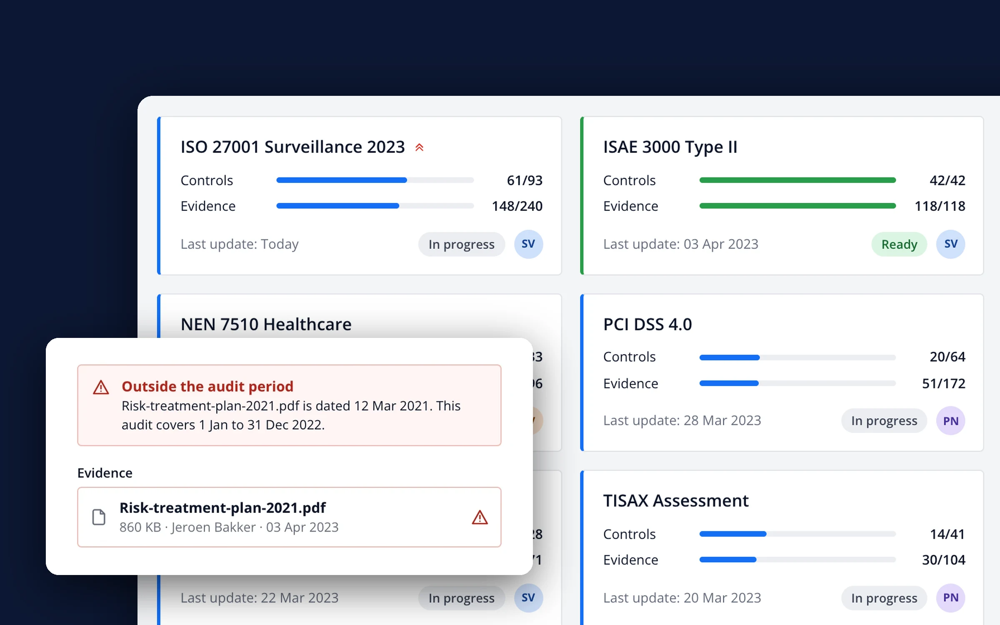
Responsibilities
UX Design
HTML/CSS Support
Date
Q1 2024
Client
Mendix (a Siemens company)
At Mendix, the low-code platform powering critical systems for ABN Amro and PostNL, security audits were becoming a bottleneck, both for Mendix itself and for its parent company Siemens. With no centralized tracking, communication scattered across platforms, and inconsistent validation methods, their certification process was at risk. This case explores how we transformed their fragmented compliance system into a streamlined security framework.
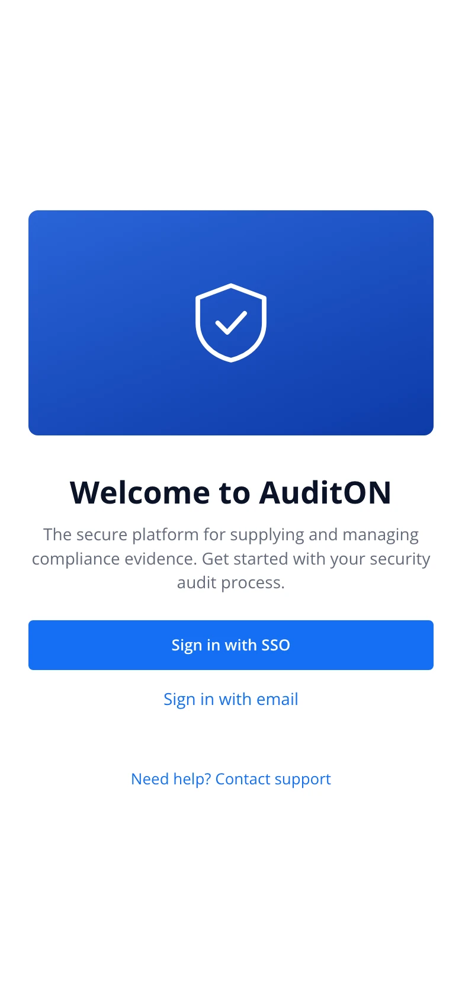
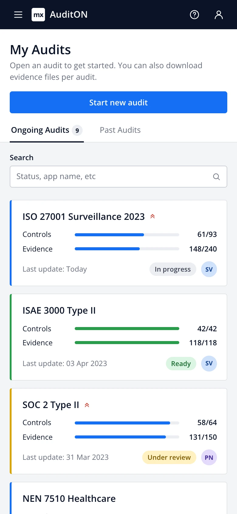
Many users weren’t deeply technical and struggled to understand audit data quickly. I redesigned the interface to present audit insights in a more digestible, visual, and prioritized way.
There were inefficiencies in how audit findings were shared across teams. I helped introduce features or workflows that made comments, assignments, or follow-ups more collaborative and trackable, reducing delays and miscommunication.
Users had trouble distinguishing between critical and minor issues. I implemented a triaging or flagging mechanism so teams could address the most pressing problems first.
Validating the Problem
To confirm the need for AuditON, I interviewed multiple users to identify workflow bottlenecks and past audit data. The results showed that around 70% of certification delays were due to miscommunication and missing evidence.
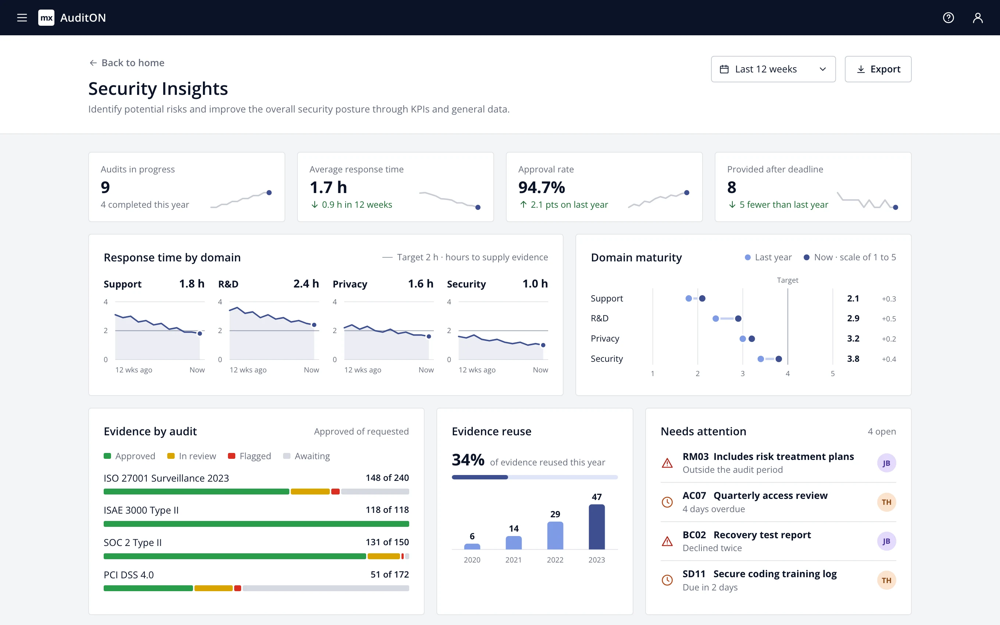
Updated flow
Most of the research was done through Stakeholder interviews with security officers & compliance managers. These were some key findigns:
After launching AuditON, we tracked key performance indicators:
Annual Audit Completion Time
This speed was compared to their prior auditing process.
Error reduction from incorrect evidence submissions
Approximation based on input re-writes as opposed to the prior solution.
Half of the security officers started using our product in 2012
After this test phase, more security officers would be onboarded.
I iterated based on feedback and refined the design to include:
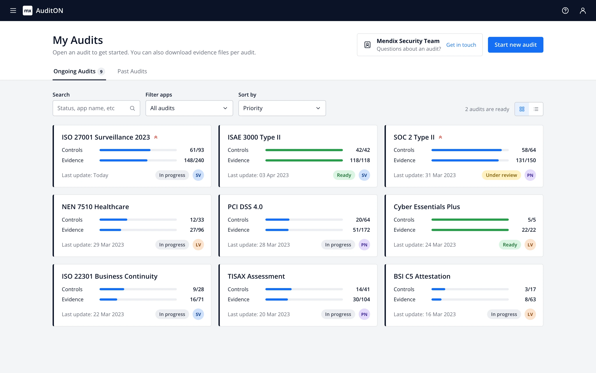
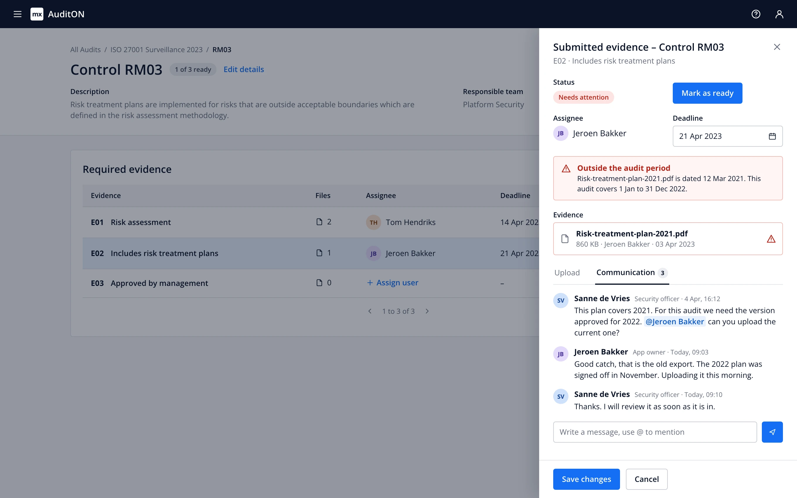
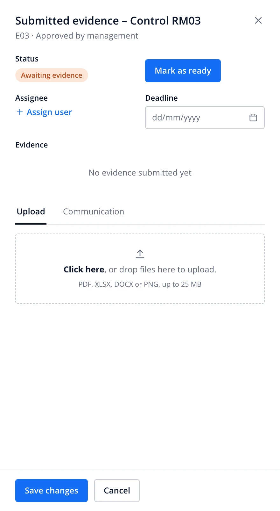
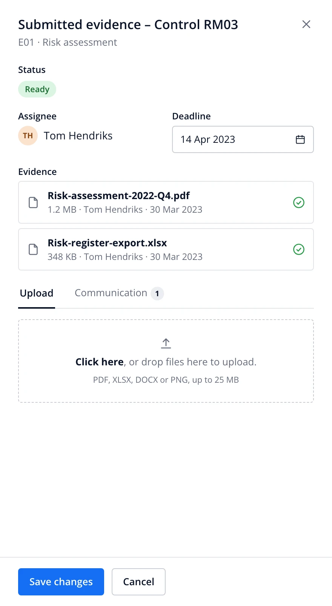
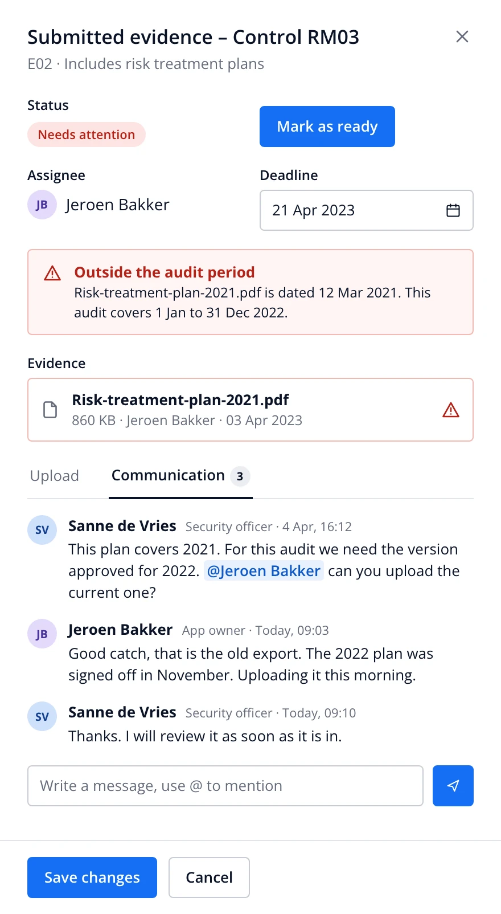
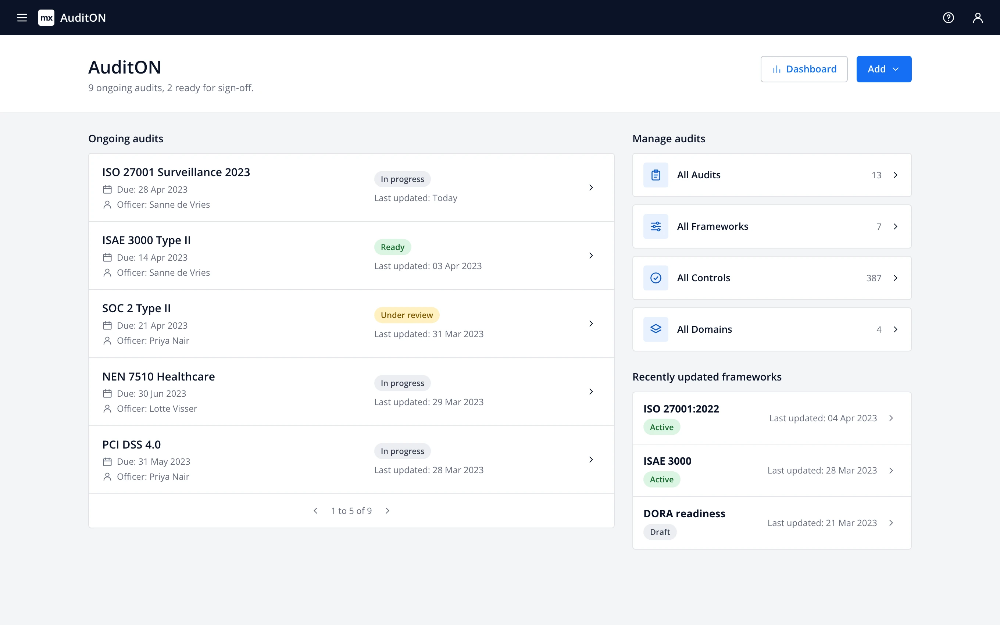
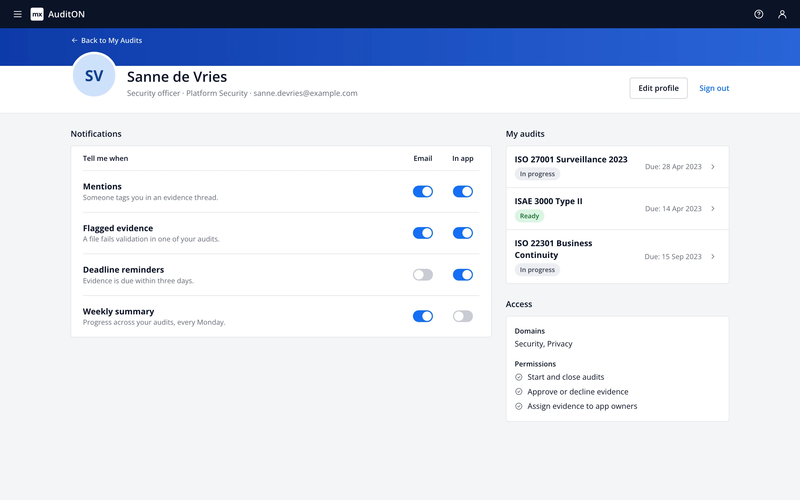
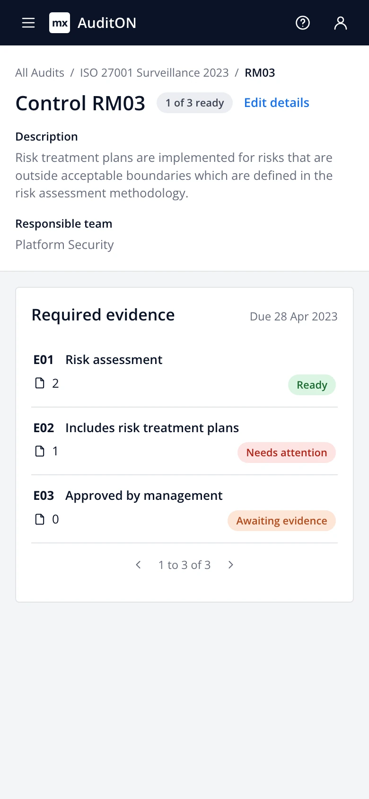
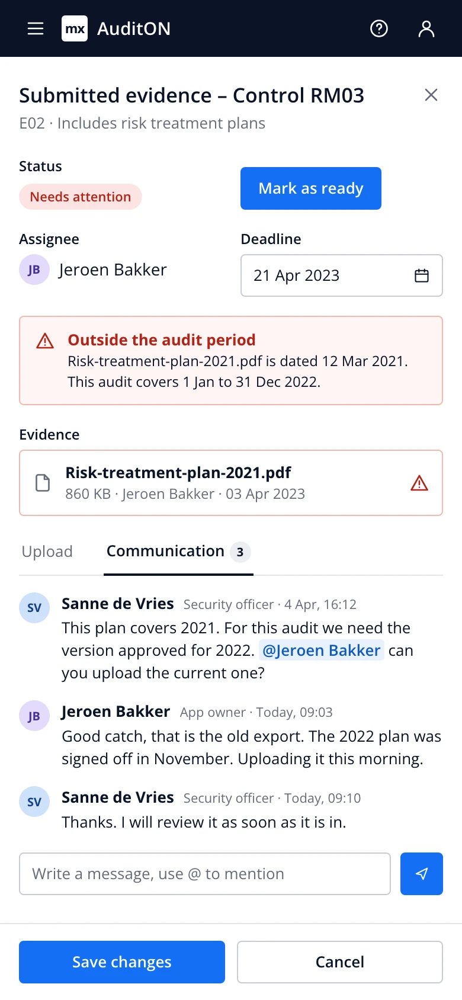
The original design files no longer exist, so I rebuilt these screens in HTML and CSS from screenshots of the product. Names and numbers are sample data. The My Audits screen includes two refinements I made for this case study: the summary row above the grid and status-coloured card edges. Security Insights shows more panels and richer sample data than the original dashboard. No screenshot of the profile page survived, so that screen is redrawn with the same components instead of copied. Open the clickable prototype
To validate the impact of AuditON, I'd use the HEART framework (focusing on Happiness, Engagement, Adoption, Retention, and Task Success) to measure how effectively it solves communication gaps, manual errors, and audit delays. Key tests would track user satisfaction through surveys. Other things such as task success and error rate could be tracked in-app (Quantitative).